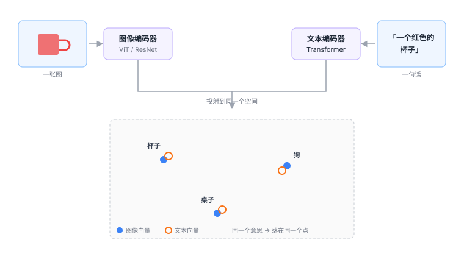

3.1 对齐：CLIP 为什么是分水岭¶
先看一个死结¶
前面两章分别讲了视觉和语言。它们各自都能变成向量。
问题是：这两组向量在不同的空间里。
图像的向量是「像素长什么样」，文本的向量是「这个词跟哪些词经常一起出现」。它们是两套完全独立的坐标系。
就像一个人只会说中文，一个人只会说英文，各自都说得很好——但你要他们交流，中间必须有个翻译。
CLIP 做的就是这个翻译，而且做法比翻译更彻底：它不是把中文译成英文，而是发明了第三种语言，让两边都会说。

CLIP 的训练方式：对比学习¶
CLIP 的训练数据极其简单：互联网上抓来的图文对。
一张图配一段描述它的文字。四亿对。
训练过程是这样的：
第一步：一个 batch 里放 N 对图文¶
假设 N = 4：
第二步：把图和文分别编码¶
4 张图得到 4 个向量，4 段文字得到 4 个向量。
第三步：两两算相似度，得到一个 4×4 矩阵¶
文A 文B 文C 文D
图A [ 0.92 -0.31 -0.08 0.05 ]
图B [-0.22 0.88 -0.14 0.11 ]
图C [-0.05 -0.19 0.90 -0.07 ]
图D [ 0.09 0.03 -0.11 0.86 ]
└──────── 对角线 = 正确答案 ────────┘
第四步：让对角线变高，其他变低¶
训练目标一句话：让每一行里，自己那一列的值最大。
对图 A 来说，它必须做到「和文 A 最像，和文 B/C/D 都不像」。
为什么负样本是关键
如果只做「图 A 靠近文 A」，模型可以偷懒：把所有向量都变成同一个值，全部靠近。
正是因为同一批次里的其他文字被当作负样本（图 A 必须远离文 B/C/D），模型才被迫去区分「狗」和「汽车」。
这个设计叫对比学习（contrastive learning）。它的精髓不在「拉近」，而在「推远」。
第五步：重复四亿次¶
最后得到的两个编码器，输出的向量落在同一个空间里。
这就是「对齐」（alignment）：不是两个空间互相映射，而是它们从一开始就被训练成了同一个空间。
对齐之后能干什么¶
一、零样本分类¶
传统分类器：训练时见过「猫」这个类别，才能识别猫。训练时没有的类别，永远认不出。
CLIP 不一样：给它一张图，和一堆候选文字（「一张狗的照片」「一张猫的照片」「一张汽车的照片」），算相似度，选最高的。
换一个类别，不用重新训练，只要改文字。
这个能力叫开放词汇（open-vocabulary）。它对机器人的意义是决定性的：
训练数据里没见过的物体，只要你能用语言描述它，模型就有可能认出来。
类比
传统视觉模型像一个只认识 1000 种东西的鉴定师，遇到不认识的就摇头。
CLIP 像一个读过很多书的人：他可能没见过这个东西，但你描述一下，他能判断「听起来像是什么」。
二、为 VLA 提供了「语义地基」¶
这是 CLIP 对 VLA 最重要的贡献，也是最容易被忽略的一点。
回想2.1 节讲的：视觉编码器输出的是特征向量。没有 CLIP 之前，这些特征是纯粹视觉的——它们知道「这里有边缘」「这里有纹理」，但不知道「这是杯子」。
有了 CLIP 式的对齐，「杯子」这个词的向量和「杯子的图像」的向量是同一方向的。
于是当模型读到指令里的「杯子」，它可以在视觉特征里找到方向一致的那一块。
「听懂指令」这件事，物理上就是这么发生的。
三、解释了为什么 VLA 能跨物体泛化¶
训练数据里有红杯子，测试时来了个蓝杯子。
如果模型只是记住了「红色圆形物体」，它会失败。但因为视觉特征是语义对齐的，「蓝杯子」和「红杯子」在向量空间里方向接近，所以模型能迁移过去。
这就是为什么新物体泛化相对容易（1.1 节那张表里的第一行），而新场景、新本体难得多。
CLIP 不是万能的¶
这一节很重要。很多介绍 CLIP 的文章只讲好处，然后读者就会疑惑：既然 CLIP 这么好，为什么还需要别的东西？
因为 CLIP 有三个明显的短板。
短板一：它对空间细节不敏感¶
CLIP 的训练目标是「整张图和整段话匹配」。
「一个人在左边，一只狗在右边」和「一只狗在左边，一个人在右边」——这两句话的语义向量几乎一样，因为 CLIP 用的是全局池化，位置信息在池化时被抹掉了。
但机器人极度依赖位置。
「抓左边的杯子」和「抓右边的杯子」，在 CLIP 看来几乎没区别。这就是为什么 VLA 不能只用 CLIP 式的特征（2.1 节讲的 DINOv2 就是为了补这块）。
短板二：它对「关系」和「数量」理解很差¶
「三个苹果」「苹果在盘子上」「杯子旁边没有东西」——这类描述，CLIP 经常判断错。
原因是图文对数据里，这种精确的关系描述很少，而且对比学习的目标不惩罚这类错误（「一个苹果」和「三个苹果」的图，整体语义确实很像）。
短板三：它的负样本是「随机凑的」¶
batch 里的负样本是随机配的，大部分时候差异巨大（狗 vs 汽车），模型很容易区分。
真正难的是「狗 vs 狼」「杯子 vs 碗」这种细粒度区分，而随机负样本里很少出现。
后来的改进（比如 SigLIP）改掉了 softmax 的做法，用 sigmoid 逐对计算，不再需要整个 batch 归一化，可以开很大的 batch，负样本更多样。
为什么新模型更爱用 SigLIP
CLIP 用的是 softmax 对比损失，需要在整个 batch 上归一化——batch 越大越好，但显存吃不下。
SigLIP 用 sigmoid，每对图文独立算「是/不是」，不依赖 batch 内其他样本。 结果是可以用更小的 batch、更省显存，效果还差不多。
这就是为什么 OpenVLA、π₀ 这些新一代模型，视觉编码器都用 SigLIP 而不是 CLIP。 名字像，思路一样，工程上更好用。
一个更本质的视角¶
CLIP 的意义不只是「一个可用的视觉编码器」。
它证明了一件事：不同模态的信息，可以被映射到同一个语义空间里，而且这个空间是连续的、可运算的。
这句话是 VLA 的理论前提。
因为如果图和文不能共存于一个空间，那「看图理解指令」就只能靠一堆手工规则拼接（先检测物体、再匹配名词、再查动作表），永远做不到端到端。
CLIP 之后，这条路才通了：
你后面看到的所有 VLA 架构图，中间那一块「拼起来」的地方，思想源头都是这里。
那动作呢？动作也被对齐了吗¶
这是个好问题，而且答案是：没有，至少没有以同样的方式对齐。
CLIP 对齐的是「视觉」和「语言」，因为互联网上有海量现成的图文对。
但「动作」没有对应的互联网数据。你不可能在网上找到「这张图配这个动作」的四亿对。
所以动作这一侧的对齐，只能靠机器人数据，规模小六七个数量级（1.2 节说过）。
这正是 VLA 最根本的不对称：视觉和语言有互联网，动作没有。
这个不对称解释了后面几乎所有的工程选择——为什么要用预训练、为什么动作头要单独设计、为什么数据是瓶颈。
自测三问
- 对比学习里，如果只用正样本（拉近匹配的图文），会发生什么？为什么负样本不可少？
- CLIP 的零样本分类能力，对机器人来说意味着什么？举一个传统方法做不到的例子。
- 为什么 CLIP 分不清「左边的人」和「右边的人」？这个短板在 VLA 里怎么被补上？
CLIP 用对比学习把图和文映射到同一个语义空间，让「词」和「物」可以互相检索。 它给了 VLA 语义地基，但丢掉了空间精度——所以现代系统会再配一个 DINOv2 补上。